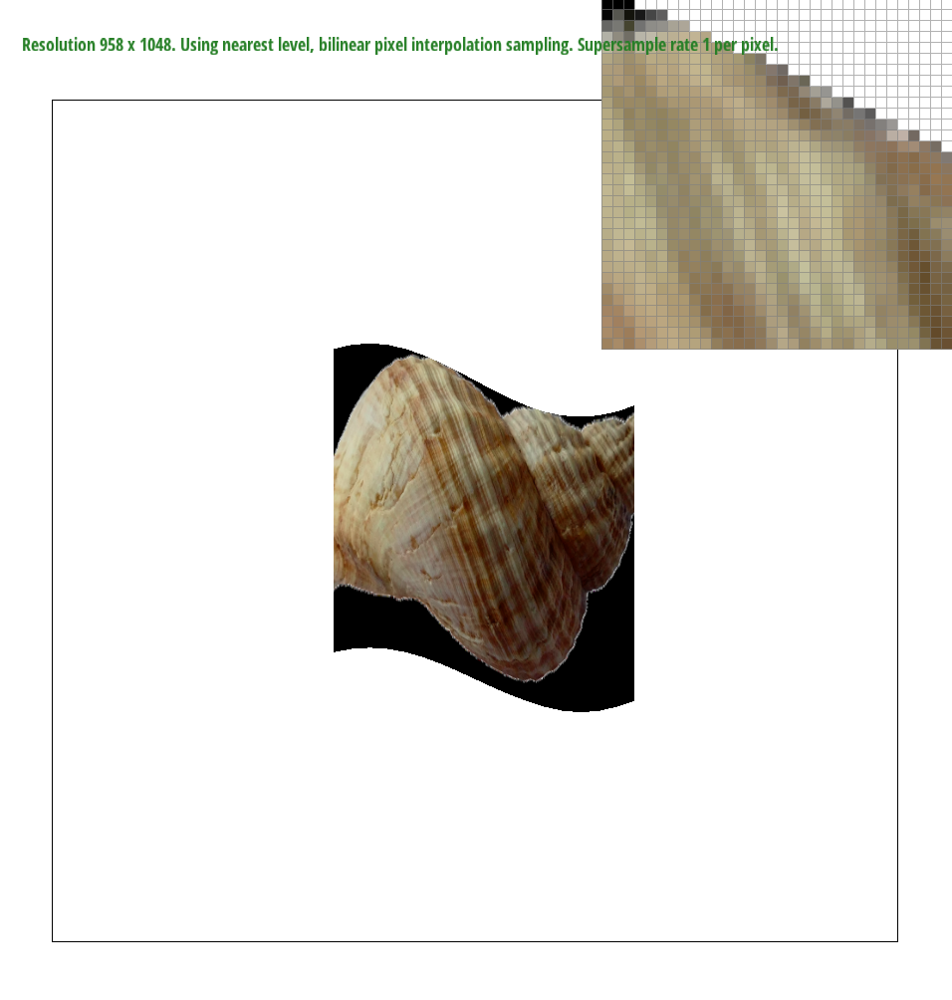

Task 1:
The first part of this homework assignment was rasterizing triangles without texture mapping. I was given the x and y coordinates of the three points in each triangle, as well as the color, and had to fill a buffer with all of the pixels to draw it. My algorithm begins by finding the minimum and maximum x and y values of the surrounding box around the triangle (so I'm not checking every pixel on the screen). Once these coordinates are found, the algorithm iterates through each pixel in the box and uses "three line tests" to determine if the pixel is in the triangle. Each line test is done on one of the sides of the triangle, and it finds the equation for the normal vector to each line and takes a dot product of the normal vector and the vector to the pixel. It returns positive if the pixel is above the line and negative if the pixel is below the line. If all three lines return a positive value, then the point is inside the triangle, and I add the color to the respective index in the buffer. This math only works when the points of the triangle are given in counter-clockwise orientation, however, so if the cross product of two of the lines is negative, I flip the order of the triangle points, and then run the line tests. Before I realized this, only the counter-clockwise constructed triangles rendered properly. I also noticed that instead of taking the cross proudct, you could just test if the line tests return all positive or all negative. If drawn in the counter-clockwise way, then it would return all positive. But, if drawn in the clockwise way, the normal vectors and dot product flip, so it would all negative. Which is equivalent to swaping the points and having it return all positive.
If I didn't find the bounding box of the triangle, my algorithm would run significantly slower, as it would be running line tests for every pixel on the screen for each triangle. Each pixel would get tested n number of times, where n is the number of pixels on the screen. Now, they only get tested a handful of times each, depending on where the bounding boxes are per picture.

Task 2:
To implement supersampling, I built off of task 1. As I iterate through each pixel, I split the pixel up into "subpixels". The sample rate determines how many subpixels there are. I iterate through each subpixel and find the location of the new subpixel coordinates. Then, I run the line tests on each subpixel for each pixel in the bounding triangle box. The buffer has to be resized whenever the sample rate changes, as it keeps track of all of the subpixels colors. Then, once the buffer has been filled and the screen is actually rendered, I average the values of the subpixels for each pixel. Supersampling is used to smooth out edges and make lines look straight instead of jaggy. This change is especially noticable on the edges of the picture when it isn't a vertical or horizontal line. By averaging, the pixels that are partly in the triangle and partly not get placed at a lighter color than one that's fully in, making the edges look smooth.
Task 3:
I changed my_robot.svg to get cubeman to put his foot up to his knee and dance!

Task 4:
Using barycentric coordinates gives you ratios or proportional distances to each vertex on the triangle. These ratios can then be used to interpolate colors across the triangle when given the colors at the vertexes. Or, it could be used to map textures from a differently scaled triangle. In this picture, I set the triangle vertex coordinates and the colors at those points. The rest was interpolated depending on their distance from the three points.
Here is a full circle!
Task 5:
Pixel sampling is picking pixels based off of an index, typically modulated away from the current drawing, otherwise you would render the same thing. In this case, it is a way to map a 2D texture to a 3D space. Or it can be used to manipulate images in 2D and cause twists in them, for example. Basically, when you know the coordinates of a triangle in your picture and the coordinates of the respective triangle in a texture, you can "copy" the triangle over while allowing the triangle shape to change (hence the distortions). I utilized the Barycentric coordinates from task 4 to find the ratios (proportional distances) of where each pixel is to the points on the triangle in my picture. Then, I used the ratios to find the location of the "equivalent" pixel on the texture map by combining the ratios with the texture map traingle point coordinates. Then, I was able to find the correct color (2 ways to do this, nearest and bilinear) from the texture map and place it into the buffer. The rest of the process remains the same. There are two types of pixel sampling methods (nearest and bilinear). The x and y value found after finding the equivalent point on the texture map is typically not an integer. When using the nearest pixel sampling technique, the x and y coordinate can just be rounded to find the nearest pixel on the texture map. The color of this pixel is placed in the buffer. However, bilinear pixel sampling is slightly more difficult. In this case, the colors of the four pixels on the texture map that surround the x and y coordinates are found. Then the bottom two and top two colors are linearly interpolated in the horizontal direction given the actual x value. Finally, these two interpolated colors are interpolated once more in the vertical direction based off of the actual y value. This is the color placed in the buffer.
|
Using nearest sampling and 1 sample per pixel easily creates the worst drawn picture. Increasing the sample rate to 16 per pixel smoothes out all of the edges and makes the picture higher quality and easier to read. Using bilinear sampling with 1 sample per pixel doesn't smooth the edges out as well (still does quite a bit), but it maintains more of the white lines. The high sample rate with nearest made some of the letters turn less white. Using bilinear and 16 samples per pixel created the best picture. There isn't much of a difference between nearest and bilinear when at 16 samples per picture, presumably because the high sample rate can somewhat "replicate" the same effect as the biliear sampling. The largest differences happen between nearest with 1 to nearest with 16, as well as, nearest with 1 to bilinear with 1. The difference between no antialiasing and smoothing to some is significnatly larger than from some to a lot.
Task 6:
Level sampling is when you pick a level or couple levels in a mipmap to pull your color from. Mip maps are a powerful preprocessing tool where each level up you go, the resolution of the image goes down. This allows for nice averaging when pulling from a texture map and removes from high frequency changes. In this case, level sampling was used to improve the texture mapping. There are three types, zero, nearest, and linear. When using the zero version, you pull the color from the 0th level, having nothing change from task 5. For the nearest version, an ideal level can be found by finding the barycentric coordinates of the pixels to the right and above the original pixel. Then, the length of the difference can be found and the level is the log2 of that. Finally, it is rounded to the nearest integer. Effectively, the rate of change determines how much averaging should be going on there. Once the level is found, then the color can be pulled in the same way as task 5, but on this new level. In the linear version, instead of being rounded, it is floored and ceiling-ed. The colors are pulled from both levels and then linearly interpolated based off of the original level value.
When taking one sample per pixel with nearest pixel sampling and zero-th level level sampling, the speed is the fastest and it uses the least memory. However, this is the most pixelated version and it typically is very jagged. When you increase the number of samples per pixel, the speed and memory gets worse, but the pictures look a lot more fluid, especially on the edges. When the pixel sampling is done bilinearly, the speed and memory gets worse but only slightly. This allows for more fluid and clear shapes in the middle of the picture. When using nearest and linear level sampling, the speed and memory needed gets worse yet again, and in this case it almost seemed too blurry. When I zoomed in significantly, however, this mode looked the best. Overall, increasing the number of samples per pixel and using bilinear pixel sampling had the best antialiasing effects.
 |
 |
Looking at these pictures, the farther right you go, the better the edges smooth into the black. Also, the midle of the shell looks less rigid and complete complete.